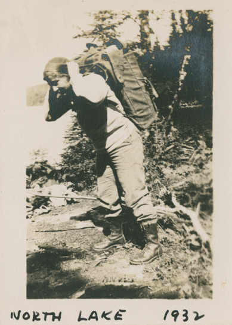

Introduction to Islandora
& the Doris McCarthy fonds
This presentation: http://is.gd/islandora
Sara Allain / @archivalistic
Digital Scholarship Unit, UTSC Library / @digitalutsc
What is Islandora?
- Digital asset management system
- Supports large, searchable collections of all kinds
- Relational database structure
Why Islandora?
- Free and open source
- Modular and extensible
- Strong preservation function
Doris McCarthy, 1910-2010

- Born in Calgary, AB and grew up in the Toronto Beaches
- Met Marjorie Beer, her lifelong best friend, in 1920
- Graduated from the Ontario College of Art (1930)
- Supported herself as a practicing artist by teaching at Toronto's Central Technical School (1932-1972)
- First woman president of the Ontario Society of Artists (1964-1967)
- Travelled widely for artistic inspiration, notably to the southeast coast of Quebec and the Canadian north
- Graduated from University of Toronto Scarborough with a BA in English in 1989
The Doris McCarthy fonds
Archival finding aid
- Donated to UTSC by Doris' estate, along with 213 artworks
- 9+ meters of textual records
- 15,000+ photographs, negatives, and slides

The fonds includes:
- Artifacts from Doris' life as an artist
- Architectural drawings for her home, Fool's Paradise (now an Ontario Heritage Trust artists' retreat)
- Both sides of a decades-long correspondence between Doris and Marjorie Beer (1912-1974)
- Diaries written between the ages of 12 and 90
- Drafts of her autobiographical publications
- Donated with the intention that the material would be made available online
The digitized collection
UTSC's Islandora repository
- 2000+ scanned images or photographs
- Over 30 gigabytes of data
- Scanned and described in-house by employees with deep subject knowledge
- Further digitization planned for this summer
Islandora Sandbox
sandbox.islandora.ca
- Find an image of anything online (Google Image Search)
- Log in using the given name and password
- Click on "Islandora Repository" in the left Navigation menu
- Click on "Large Image Collection"
- Click on "Manage", then "Add an object to this collection"
- Create metadata using the form and upload your object